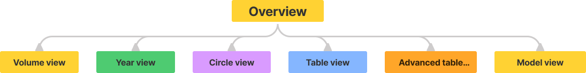

SAFETY MAPPING
Safety mapping is a project that aims to depict how often different safety features are added to different buss models when purchased.
I made a re-designed and improved the existing tool to better convey the data. I also simplified the process of updating the data. I was the sole designer and Power BI developer of the project.
WHY IS THIS PROJECT IMPORTANT?
Vehicle companies are amazing at developing different features for their vehicle's. Features from seat heaters all the way to automatic breaks. This gives the customer many options to choose from when ordering a vehicle. But what happens once these features are developed? How well do the features actually perform on the market?
I had the opportunity to improve the tool that visualised this problem. I was responsible for the design and development of an interactive report in Microsoft Power BI.
(For certain reasons I am recommended not to name the vehicle company.)
Microsoft Power BI
Power BI is an analysis tool used in business intelligence and computer visualization. The tool allows a user to import, transform and visualize data from multiple different sources as well as to share an interactable report.
THE PROCESS
Inspired by Jesse James Garret's book The Elements of User Experience, I decided to take some inspiration from his UX design process into my own.
DEFINING THE PRODUCT OBJECTIVES
Talking to the Stakeholders
By talking to our stakeholders, I could determine that the users wanted an easier way to get information about the vehicles and the features penetration rate. According to the stakeholders, some of the major pain points with the previous version of tool was its many complications and limitations.
The Main Pain Points
- Updating the reports data
- Showing newly added features from data in reports visuals
- Filtering the reports visuals
- Understanding the reports visuals and tools
THE PROBLEM SPACE
The tool already existed and our purpose was to improve the existing tool. To better understand the problems with the existing tools it is important to understand the users. But to understand the users it is important to talk to the users.
Asking the questions
To get a deeper understanding of what needs to be improved it is important to ask the right questions. To help clarify this, I decided to create a list that summarized the projects general objectives into a list of “how can we” questions.
How can we ...
- Improve the process for updating data in the report?
- Simplify the overall usage of the tool?
- Improve and add visuals inside the report?
- Simplify the work for the employees?
UNDERSTAND THE USERS
It is important to know who our users are, as well as their needs, before starting to design and develop the tool. As the end-users of this tool mainly would be our stakeholders, and other members of their team, it was easy to discuss the issues with them to get a better understanding of the problem. This was done by going through the previous tools design and discussing its difficulties.
User needs
- Easily be able to update the data
- Add new features
- Description for the different visuals
- Description of different feature abbreviations
- Explanation on how to use the tools
- Easier and more dynamic filter and slicer functions
- Customizable visuals for the different users
- Quick and easy to use tool
Improvement's specification
To transform and clarify the users need into features that could be implemented into the tool an improvement's specification was created. The list divides feature inside the tool that exist but should be improved and feature that don't exist but should be added. This was used during the work process to remember what was to be improved, included and removed.
- Improve
- Improve data updating process
- Improve the overview
- Improve graphs that show penetration rate
- Improve advanced table view and make more customisable
- Add
- Add description of different feature abbreviation
- Add information about visuals
- Add information on how to use the tools
- Add tools that filter the data
- Add navigation
INFORMATION ARCHTECTURE
One of the major flaws with the previous design was its information architecture. Because of my background in cognitive science, I could clearly see the lack of consideration of cognitive psychology and how the human mind processes information. For that reason, I tried to structure the content so that it is was easier for the users to navigate and find relevant information.
Mental models are simple representation in the human mind of how different things work. They are pre-existing assumptions people have in their mind before interacting with the world. It is therefore important to design so that the products are adjusted to the users beliefs and assumptions to make the experience easy and straightforward. By interviewing and asking the users questions related to the designs structure I could better understand their mental models of the product. With this I for example created a navigation that structure the relevant information on to different pages.
SKETCHING
To transform and clarify the users need into features that could be implemented into the tool an improvement's specification was created. The list divides feature inside the tool that exist but should be improved and feature that don't exist but should be added. This was used during the work process to remember what was to be improved, included and removed.
.png)
Developing the tool
One of the more time-consuming part of the project was the development of the tool. To convert the design from a visual prototype to a functioning report led to many challenges and complications. Because Power BI for example had a limited python integration it also led to compromises such as not being fully automatic when updating the data. But even if there where compromises the new version of the tool had many improvements and all points in the requirement specifications were fulfilled.
Testing
During development demo versions where shared with the stakeholders to provide feedback to the report. User testing was also conducted and was in the form of the "think aloud" method. The user was given a specific task while recommended to “think out loud” when using the prototype. This was to draw attention to the customer's user experience and shortcomings of the tool. Changes made were for example creating an overview page, adding certain feature descriptions and changing the presentation of certain visuals.
The final product
The final product was an interactable report that could be shared, in the form of an app, throughout the company's communication pages. This to easy be able to see how well different safety features for the vehicles preformed on the market.
My Final thoughts
The new version led to many improvements and our stakeholders where happy with the results. However, there are still many improvements that could be made. For example, it would be good if the user could filter more general areas. Another improvement could be to make the report more adapted for specific users where the report shows information relevant to the current user. But for now these will be left as “future improvements”.